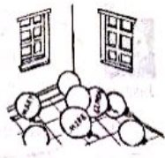

2018年北京市中考英语试题 · 完形填空 第13、14、15、16、17、18、19、20题
二、完形填空
阅读下面的短文，掌握其大意，然后从短文后各题所给的的A、B、C、D四个选项中，选择最佳选项。
Real Solutions（解决方法） to Problems
Thirty engineers were working as a team in a company. They were young and eager to learn. The management decided to teach them about finding real solutions to problems
One day, the team was called for a ____13____in a hall. They were quite surprised and all reached the hall holding various____14____. As they entered, they found a box placed in the center, full of flat balloons
The manager asked everyone to pick a balloon and blow it up. Then they were asked to write their names on their respective(各自的)balloons ____15____so that the balloons wouldn’t blow out. All tried, but not everyone was ___16___. Five balloons blew out due to pressure（压力）.

Those who failed to mark their names on the balloons were ___17___ out of the game. As a result, 25 engineers came to the next level. All the balloons carrying their names were ___18___ and then put into a room, here and there.
The engineers were told to pick the balloon with his or her name on, All the 25 engineers began to search for the respective balloons in a rush. It was almost 15 minutes but no one was able to ___19___ the right one. The second level of the game was over.
Then came the final level. the engineers were asked to pick any balloon and give it to person named on the balloon. Within a couple of minutes, all balloons ___20___ the hands of the respective engineers.
The manager announced this was the real solution to the problem. Many times in our life,sharing and helping others give us real solutions to problems.
13. A. gameB. showC. concertD. party
14. A. purposesB. suggestionsC. thoughtsD. plans
15. A. quietlyB. carefullyC. secretlyD. clearly
16. A. honestB. readyC. patientD. successful
17. A. checkedB. helpedC. ruledD. cleaned
18. A. collectedB. weighedC. tiedD. cleaned
19. A. markB. hideC. numberD. find
20. A. freedB. reachedC. liftedD. hit